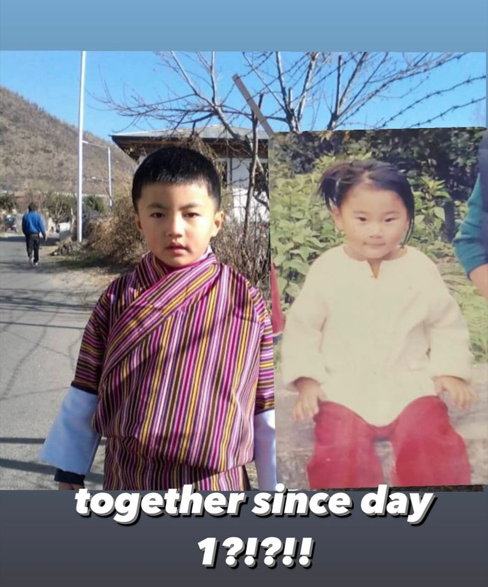

Us as a cat and a raccoon hugging each other.
We've been a cat and raccoon for so long now, I actually think we look like each animal respectively.
We've been a cat and raccoon for so long now, I actually think we look like each animal respectively.
LZMSS, familiar place. There was some sort of event going on, don’t remember much detail but yea, something was going on. and then i forgot a chunk. next thing i remember, im walking up the hill in yhss, its quite late, maybe around 6(pretty dark). i see some guys walking back down, so im like, “oh well time to leave then”, and start walking down too. for some reason, i start running, and i keep running until i reach the lmss car parking, where i find tshoki :000. i hug her mhmhmhm for quite a while, and we start walking🥰. we walk together across the zampa, with her arm thru mine. her mom comes to pick her up from under the bridge. end.
twas a weird dream, we were in makeshift amsterdam with our other friends. i came across a wes anderson style cafe. next scene, we were with our other friends(idk remember who) and i just leave abruptly(?), once i get pretty far away, i ask you to join me, but discreetly so the others don’t notice hehe. and the both of us gooooo. the dream i had the next day also took place in amsterdam(for part of it). for some reason, the two of us were on different flights, but we landed at amsterdam at the same time. we visit a huge greenhouse, with plentiful colorful flowers, and ample sunlight. outside there’s rows and rows of beautifully colored buildings, like colorful tulips lined up in a large tulip field. i’d hold your hand in that place:)
I am your big dummy. My emotions are always on my sleeves for you. You know how I think, you know who I am. and i could never ask for anything more from anyone.
I am a book written is a language only you can understand.
I love you, tshoki:) you are the love of my life.